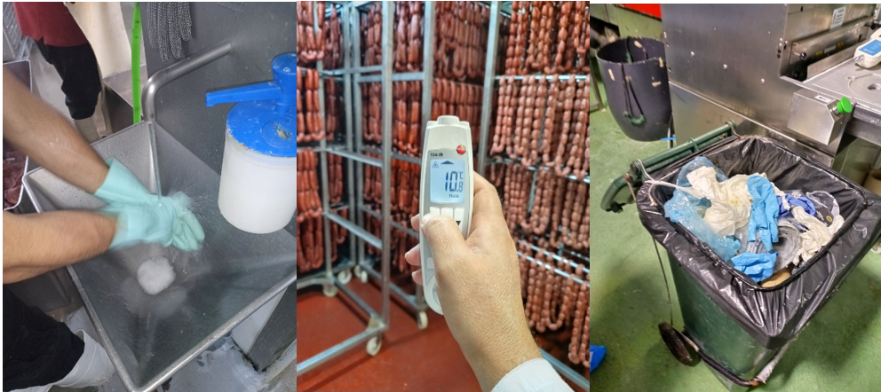
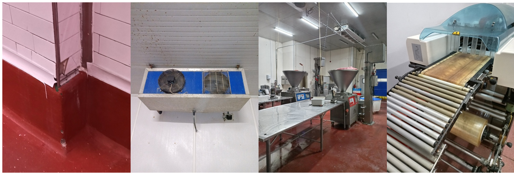

Auditorías
Auditorías presenciales con informe detallado de conclusiones y recomendaciones
Auditoría a proveedor
Verificamos que tus proveedores cumplen los requisitos que les has impuesto para garantizar la conformidad del producto. Realizamos la auditoría siguiendo los check-list propios del cliente y emitimos un informe completo con los hallazgos y conclusiones.


Auditoría interna de Buenas Prácticas de Manipulación
Verificamos el cumplimiento de las BPM por parte del personal interno o subcontratado, revisando las obligaciones higiénico-sanitarias, las condiciones de almacenamiento y la producción higiénica de los alimentos.
Auditoría de instalaciones
Constatamos el grado de limpieza, mantenimiento y estado general de instalaciones, utensilios y equipos, para verificar el cumplimiento de los requisitos legales o normativos aplicables.


Auditoría previa y auditoría interna según normas GFSI
Realizamos auditorías de diagnóstico previas a la implantación de normas de calidad (IFS, BRC, ISO 22000, FSSC 22000), analizando la situación de la empresa respecto a requisitos documentales y de instalaciones. También realizamos auditorías internas periódicas para dar cumplimiento a los requisitos obligatorios de estas normas.
Auditoría SAE y Bienestar Animal
La auditoría SAE verifica los requisitos necesarios para la exportación de productos de origen animal a terceros países según el Sistema de Autocontrol Específico. La auditoría de bienestar animal evalúa el cumplimiento de la normativa vigente en esta materia, cada vez más exigida por compradores y distribuidores.